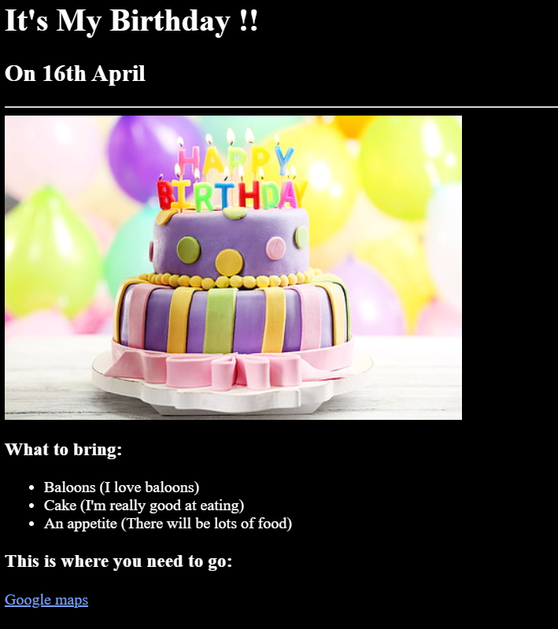

- Birthday Invite
- Movie Rankings
- This is my Third Project
This is the very first project that I had created using only HTML.
You can find it here:
My Birthday Invitation
This is the second project that I had created using HTML.

You can find this one here: